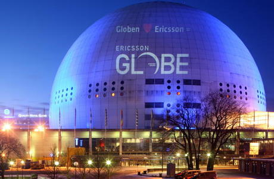

Hur utformar man bra alt-texter till bilder?
Skapad av Da Sing Trinh / @dstrinh
Vad är Alt Text
Attribut
Textalternativ
Webbläsaren
Blinda
Anslutning
Fel i src-attributet
SEO
Håll din alt-text Meningsfull
"För dina läsare"
"Samma funktion"
Håll texten kort men beskrivande
125 tecken eller färre
JAWS (Job Access With Speech)
Laddar snabbare
Bilder som länkar
Glöm inte att skriva bildens funktion.
Logotyper
Klickbar
Excluderar ordet logo
Exempel på ALT-texter
E-handel
En e-handel som omfattar tre kreditkort.
Om du behöver veta vilka kreditkort kan användas, vilket skulle vara bättre ALT-text?

ALT 1 ="Credit Card Logos"
ALT 2 ="Master Card, Maestro and VISA accepted."
Flera sätt att skriva alt-texter
alt="The Ericsson Globe"
alt="The Ericsson Globe (Stockholm, Sweden)"
alt="The Ericsson Globe, the national indoor arena of Sweden. It's shaped like a large white ball."
Känslor

Målgrupp? Budskap?
Bra exampel: Forlorn children stare at the rubble that was once their house in wake of the tornado.
Dålig exempel: Torn-down house from a tornado.
SLUT
Av Da Sing Trinh
Källor
http://www.bebetteronline.com/blogg/on-page-optimering/
http://webdesign.about.com/od/accessibility/a/great_alt_text.htm
http://webaim.org/techniques/alttext/
http://accessibility.psu.edu/imageshtml
http://www.phase2technology.com/blog/no-more-excuses-the-definitive-guide-to-the-alt-text-field/